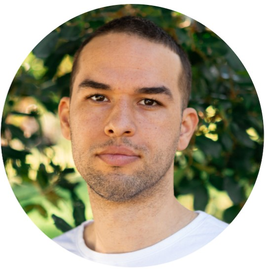

REMY LAWYER Advanced Networking & Cloud Engineering student |
 |
ContactPhone 0455 222 680Email remylawyer1995@gmail.comLocation Gold Coast, QLDEducationTAFE Queensland 06/26 - Current Diploma of IT Advanced Networking & Cloud Engineering (full time) Grossmont College, El Cajon, California 2014 - 2015 Sophomore Year. Majored in Psychology. Member of the Men’s Basketball Team Miramar College, San Diego, California 2013 - 2014 Freshman Year. Majored in Psychology. Member of the Men’s Basketball Team Helensvale State High School 2012 Gold Coast, QLD. Graduated in 2012. Attained Queensland Certificate of Education Licenses & Qualifications
ReferencesAvailable upon request | ProfileI am an individual with a diverse wealth of skills and experience that would be an asset to your organisation. I’m a fast learner who pays great attention to detail and takes immense pride in the quality of my work. I’m comfortable working under the pressure of deadlines, targets, and have an enthusiastic, level-headed, and solution-oriented approach. Given the opportunity, I will quickly prove myself to be a consistent, professional, and hard-working addition to your company. I am available 24/7 for an immediate start. IT CertificationsCisco Networking Academy, 12 completed
Work ExperienceDelivery Partner
Delivering food orders to customers on a flexible schedule alongside full-time study. Traffic Management Implementer
Implementing traffic management plans and controlling traffic around worksites. Traffic Controller
Controlling and directing traffic around works to keep workers and the public safe. Coach/Mentor
Coaching and mentoring young athletes for athletic performance, mental strategies & basketball related skills. Digital content for marketing & educational purposes. Coaching ages from 7-30+ years of age. |
| C-Dunk Basketball (Hanoi, Vietnam) | 09/18 - 08/21 |
| MVP Basketball Academy (Hanoi, Vietnam) | 09/21 - 10/22 |
| E-Balls Basketball Academy (Hanoi, Vietnam) | 09/18 - 09/21 |
| AB Paterson School | 01/16 - 08/16, 01/18 - 08/18 |
| Mariner’s Cove Fish & Chips | 10/17 - 07/18 |
| Caranity School | 08/17 - 12/17 |
| CAFÉ 4 U | 09/16 - 03/17 |
| Gladstone “Port City” Basketball | 05/16 - 08/16, 01/17 - 09/17 |
| BJ's Restaurant & Brewhouse (San Diego, USA) | 01/16 - 05/16 |
| Rite Aid (San Diego, USA) | 01/13 - 11/16 |